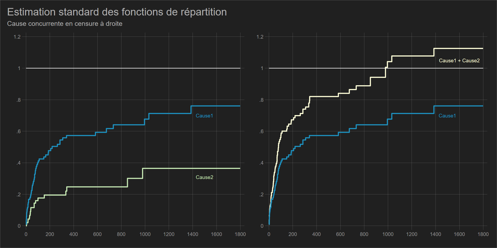

Risques concurrents
Le problème des événements multiples dans les analyses de survie a été posée dans les années 1970 avec la notion de “risques concurrents” (competing risks) : il s’agit d’événements survenant au cours de la période d’observations et qui “empêchent” l’occurence de l’événement d’intérêt.
On étudie un processus dont l’occurence a plusieurs modalités, “types” ou “causes”: la mortalité par cause de décès, les types de sortie du chômage (formation, emploi, radiation), les types de sortie de l’emploi (chômage, longue maladie, sortie du marché du travail hors retraite), les lieux de migration ou les espaces de mobilité résidentielle, type de rupture d’union (séparation-divorce, veuvage). Déjà abordé dans la partie théorie, avec un recueil de données de type prospectif les “perdu.e.s de vue” peuvent difficilement être assimilés à des sorties d’observation non informatives (censures).
L’analyse des risques concurrents est un cas particulier des modèles “multi-états” avec différents risques considérés comme absorbants.
En présence de risques concurrents, l’estimation de Kaplan-Meier ne peut se faire que sous l’hypothèse d’indépendance entre chacun des risques. Sinon l’estimateur de Kaplan-Meier n’est plus une probabilité.
Une estimation de type KM d’un évènement en concurrence avec d’autres impose que ces derniers soient traités comme des censures à droites non informatives. Mais il n’est pas possible de tester cette hypothèse.
1 Risques “cause-specific” et biais sur les estimateurs KM
- Si les risques ne sont pas indépendants les uns par rapport aux autres, la somme des estimateurs de (1-KM) pour chaque risque n’est pas égale - elle est supérieure - à l’estimateur de (1-KM) où les risques concurrents sont regroupés en un évènement unique (par exemple le décès).
- Le risque calculé en considérant les risques concurrents comme des censures à droite est appelé “cause-specific risk.
Cause specific risk
Pour le risque de type \(k\), le risque cause-spécifique (traduction?) en \(t_i\) est égal à:
\[h_k(t_i)=\frac{d_{i,k}}{R_i}\] Où \(d_{i,k}\) est le nombre d’évènement de type \(k\) survenu en \(t_i\) et \(R_i\) la population soumise en \(t_i\).
Conséquence: si les risques ne sont pas indépendants, la fonction de survie estimée avec la méthode Kaplan Meier n’exprime plus une probabilité.
Exemple sur les décès causés par une malformation cardiaque aigüe
Dans la base d’origine, il n’y a pas directement cette dimension de risque concurrent, même si on trouve dans la littérature médicale des études prenant le décès rapide post greffe comme un risque de ce type. Les données étant assez anciennes, avec beaucoup de décès post-opératoire, je ne me suis pas « risquer » à générer directement un risque concurrent. Une sortie concurrente a donc été simulée sans plus de précision (cause2), que l’on considèrera non strictement indépendante à la cause d’intérêt. Ce risque entre en concurrence avec la cause du décès directement liée à la malformation cardiaque, que la personne ait été transplanté ou non.
| Survival Status
| (1=dead)
compet | 0 1 | Total
-----------+----------------------+----------
0 | 28 0 | 28
1 | 0 56 | 56
2 | 0 19 | 19
-----------+----------------------+----------
Total | 28 75 | 103
Variable compet: cause 1 => décès directement provoquer par la malformation, 2 => autre cause.
Lorsqu’on a analysé le décès par la méthode KM, la proportion de survivant.e.s était de 15%.
Si on applique la méthode de Kaplan Meier à la cause 1 en traitant la cause 2 comme une censure à droite, et à la cause 2 en traitant la cause 1 comme une censure à droite, puis en sommant les deux estimateurs, la fonction de répartition excède 100% au bout de 1000 jours environs. La proportion de survivant.e.s est donc négative.

2 Estimations en présence de risques concurrents
2.1 Estimation non paramétrique
- Utiliser l’estimateur de Nelson Aalen: il s’agit du risque instantané cumulé. Comme il ne s’agit pas d’une probabilité, il a été longtemps utilisé comme mesure de l’incidence en présence de risques concurrents dans une logique dite “cause spécifique”:
\[H_k (t_i)=\sum_{t_i\leq t}\left(\frac{e_{i,k}}{n_i}\right) \]
- De nos jours, l’estimateur le plus utilisé est la fonction dite d’incidence cumulée - CIF- (Kalbfleisch-Prentice, Marubini-Valscchi):
- Il repose sur une probabilité tout en supportant la non indépendance des risques.
- Son interprétation est identique à la fonction de répartition \(F(t)=1-S(t)\). Cette fonction est donc croissante.
- Il est possible de tester les différences entres CIF: test de Gray ou test de Pepe-Mori.
La fonction d’incidence cumulée (CIF
- Si \(h_k(t_i)\) est le risque “cause-spécific en \(t_i\) et \(S(t_i-1)\) l’estimateur de Kaplan-Meier en \(t_i-1\) lorsque tous les risques sont regroupés en un évènement unique, l’incidence cumulée pour le risque \(k\) en \(t_i\) est égale à:
\[IC_k(t_i)= \sum_{t_i\leq t}S(t_i-1)h_k(t_i)\]
- Les valeurs prises par cette fonction pour la cause \(k\) ne dépendent donc pas seulement des individus ayant observé l’évènement à partir de cette seule cause, mais aussi du nombre de personnes qui n’ont pas encore observés l’évènement à partir des autres causes identifiées. Cette dernière information est donnée par \(S(t_i-1)\).
- L’incidence cumulée peut ainsi s’interpréter comme la proportion d’individus qui sont sortis du risque jusqu’en \(t_i\) en raison de la cause \(k\).

failure: compet == 1
competing failures: compet == 2
Time CIF SE [95% Conf. Int.]
--------------------------------------------------
1 0.0097 0.0097 0.0009 0.0477
2 0.0194 0.0136 0.0038 0.0619
3 0.0485 0.0212 0.0181 0.1022
5 0.0680 0.0248 0.0300 0.1273
6 0.0874 0.0278 0.0429 0.1515
8 0.0971 0.0292 0.0497 0.1634
9 0.1068 0.0304 0.0566 0.1751
12 0.1166 0.0316 0.0638 0.1868
16 0.1264 0.0328 0.0711 0.1984
18 0.1362 0.0338 0.0785 0.2099
21 0.1559 0.0358 0.0937 0.2325
30 0.1657 0.0367 0.1014 0.2437
32 0.1756 0.0376 0.1093 0.2550
35 0.1856 0.0384 0.1173 0.2662
37 0.1955 0.0392 0.1253 0.2773
39 0.2055 0.0400 0.1335 0.2884
40 0.2156 0.0407 0.1418 0.2996
45 0.2256 0.0414 0.1502 0.3107
50 0.2357 0.0421 0.1586 0.3217
53 0.2458 0.0427 0.1671 0.3327
58 0.2559 0.0433 0.1757 0.3436
61 0.2660 0.0439 0.1843 0.3544
66 0.2761 0.0445 0.1930 0.3652
68 0.2861 0.0450 0.2018 0.3759
69 0.2962 0.0454 0.2106 0.3866
72 0.3063 0.0459 0.2195 0.3973
77 0.3164 0.0463 0.2284 0.4079
78 0.3265 0.0467 0.2374 0.4184
81 0.3365 0.0471 0.2464 0.4289
85 0.3466 0.0474 0.2554 0.4393
90 0.3567 0.0478 0.2645 0.4497
96 0.3668 0.0481 0.2737 0.4601
100 0.3769 0.0484 0.2829 0.4704
102 0.3870 0.0486 0.2921 0.4807
110 0.3972 0.0489 0.3016 0.4911
149 0.4078 0.0491 0.3112 0.5019
153 0.4183 0.0494 0.3209 0.5125
186 0.4291 0.0496 0.3309 0.5235
188 0.4399 0.0498 0.3409 0.5343
207 0.4506 0.0500 0.3509 0.5451
263 0.4614 0.0502 0.3610 0.5559
285 0.4836 0.0505 0.3818 0.5780
308 0.4947 0.0506 0.3923 0.5890
340 0.5058 0.0507 0.4028 0.5999
583 0.5211 0.0513 0.4162 0.6158
733 0.5391 0.0524 0.4313 0.6351
852 0.5584 0.0535 0.4475 0.6555
995 0.5811 0.0550 0.4657 0.6801
1032 0.6039 0.0561 0.4850 0.7036
1386 0.6343 0.0584 0.5084 0.7362
failure: compet == 2
competing failures: compet == 1
Time CIF SE [95% Conf. Int.]
--------------------------------------------------
2 0.0194 0.0136 0.0038 0.0619
16 0.0391 0.0191 0.0128 0.0897
17 0.0489 0.0213 0.0182 0.1029
28 0.0587 0.0232 0.0240 0.1157
36 0.0686 0.0250 0.0302 0.1286
40 0.0787 0.0267 0.0368 0.1413
43 0.0888 0.0283 0.0436 0.1539
51 0.0989 0.0297 0.0506 0.1663
68 0.1090 0.0310 0.0578 0.1785
72 0.1190 0.0323 0.0651 0.1905
80 0.1291 0.0334 0.0726 0.2024
165 0.1396 0.0346 0.0804 0.2149
219 0.1504 0.0358 0.0886 0.2276
334 0.1615 0.0370 0.0970 0.2406
342 0.1730 0.0383 0.1058 0.2540
675 0.1910 0.0414 0.1177 0.2777
979 0.2138 0.0457 0.1321 0.3086
En présence du risque concurrent, et traité comme tel, 50% des personnes sont décédées directement de la malformation cardiaque au bout de 308 jours (200 jours avec une estimation de type « cause specific »).
On peut vérifier que la somme des estimateurs permet d’obtenir la survie toutes causes confondues. Il n’y a pas de surprise à cela, dans l’estimateur Marubini-Valscchi la survie d’ensemble intervient comme un facteur de pondération de la mesure d’intensité dite « cause-specific ».
Logiciels
L’estimation avec des risques de type « cause-specific » demande juste de recoder la variable évènement/censure, en glissant les risques concurrents en censure à droite.
Sas: maintenant directement estimable avec
proc lifetest. Il suffit d’indiquer le ou les risques d’intérêt dans l’instruction indiquant la variable de durée et de censure avec l’optionfailcode=valeur.Stata: Estimation avec la commande externe
stcompet. La commande génère des variables qui demande des manipulations supplémentaires pour afficher les résultats sous forme de tableau par exemple. On peut utiliser et préférer la commande externestcomlist.R: la librairie
cmprskpermet d’estimer simplement les incidences cumulées avec la fonctioncuminc.Python: le wrapper de R (
cmprsk) ne fonctionne plus à ce jour à défaut de mise à jour.
Compararaison des CIF
Test d’homogénéité de Gray: est basé sur une autre mesure du risque en évènement concurrent. Il s’agit du « subdistribution risks (« risque de sous-répartition », A.Latouche). Son interprétation n’est pas aisée car les personnes ayant observé un risque concurrent sont remises dans le Risk Set. Mais il est directement lié à l’estimation des CIF. Disponible avec SAS et R. Il est également sensible l’hypothèse de proportionnalité et à la distribution des censures à droites entre les groupes comparés. A ma connaissance il n’y a pas de variantes pondérées.
Test de Pepe & Mori: teste directement deux courbes d’incidences et seulement 2. Il y a une version du test qui repose sur une autre fonction directement tirée des incidences, la CPF (Conditional Probability Function), qui n’est pas traite pas afin de ne pas rajouter un concept de supplémentaire.
Test de Gray pour la variable surgery
Tests:
stat pv df
cause1 5.7834605 0.0161 1
cause2 0.1293076 0.7191 1Test de Pepe-Mori pour la variable surgery
Main event failure: compet == 1
Chi2(1) = 6.2028 - p = 0.01275
Competing event failure: compet == 2
Chi2(1) = 1.8796 - p = 0.17038Sas: le test de Gray est estimé si on ajoute l’option strata=nom_variable à la proc lifetest sous risque concurrent (voir encadré précédent). Le test de Pepe-Mori est disponible via une macro externe (
%compcif: non testée) :Stata: Le test de Gray n’est pas disponible, il faut passer par une exécution de la fonction cuminc de la librairie R cmprsk directement dans stata (voir la commande rsource). Pour faire plus simple, on peut estimer le modèle de Fine-Gray avec une seule variable (discrète). Le résultat est comparable à celui du test (voir plus bas). Le test de Pepe-Mori est disponible via la commande externe stpepemori.
R: On ajoute une variable à la fonction cuminc de la librairie cmprsk. Pas de test de Pepe-Mori sur les fonctions d’incidence à ma connaissance.
Python: ne pas essayer d’utiliser la librairie cmprsk qui n’est pas mis à jour et ne fonctionne plus.
3 Estimation semi paramétrique et à temps discret
3.1 Modèles Semi paramétriques
Cette présentation sera plutôt brève. Dans le domaine des sciences sociales, je préconise plutôt l’utilisation d’un modèle multinomial à temps discret de type logistique. Le modèle de Cox en présence de risques concurrent n’est valable que dans une logique de risques « cause-specific », le modèle de Fine et Gray bien que directement relié à l’estimation des incidences cumulées, repose sur une définition du risque (de sous répartition) dont l’interprétation n’est pas naturelle. Il est également soumis à l’hypothèse de proportionnalité des risques.
Modélisation des risques « cause-specific » : Cox
Modèle de Cox «standard» pour chaque évènement, les évènements concurrents sont traités comme des censures à droite. Aucune interprétation sur les fonctions d’incidence ne peut-être faite.
Modèle de Fine-Gray: subdistribution hazard regression
Modèle de type semi-paramétrique avec une redéfinition du risque lié à l’estimation des fonctions d’incidence (voir test de Gray). La différence avec le Cox classique réside dans le calcul du risk-set : les évènements concurrents ne sont pas considérés comme des censures, on laisse les individus leur « survivre » jusqu’à la durée maximale observée dans l’échantillon. L’interprétation n’est donc pas très intuitive (Fine et Gray le soulignent). Ce modèle est relativement contreversé.
Pour les questions liées à l’interprétation de ces deux types de modèles, se reporter à: https://onlinelibrary.wiley.com/doi/epdf/10.1002/sim.7501
Logiciels (modèle de Fine & Gray)
Sas: même principe que pour l’estimation non paramétrique, on ajoute l’option
eventcode=valeurà l’instructionmodelde laproc phreg.Stata: on utilise la commande interne
stcrreg.R: on utilise la fonction
crrdu package cmprsk.Python : ne pas essayer d’utiliser la librairie cmprsk qui n’est pas mis à jour et ne fonctionne plus.
3.2 Modèle à temps discret
Il s’agit d’une extension du modèle à temps discret à évènement unique (toutes causes regroupées) avec ici le modèle logistique multinomial.
S’il ne permet pas une interprétation sur les fonctions d’incidences, les risques concurrents ne sont pas traitées comme des censures à droite et sont estimés simultanément à la cause d’intérêt.
Le modèle multinomial repose sur une hypothèse dite « d’indépendance » des alternatives non pertinentes » (IIA). Cela peut donc paraitre contradictoire d’utiliser ce modèle pour des évènements qui sont supposés non indépendants. Néanmoins la dépendance entre risques concurrents n’est pas non plus stricte. L’hypothèse d’IIA est souvent illustrée par l’exemple des couleurs des bus dans le choix du mode de transport (G.Debreu). On est loin ici d’un tel niveau de dépendance.
En terme de lecture, le modèle logistique multinomial les estimateurs peuvent directement s’interpréter comme des rapports de risque (ou relative risk ratio).
En sciences sociales, il me semble que ce type de modèle soit à privilégier.
On peut également envisager un modèle de type probit multinomial, mais on peut rencontrer des problèmes d’estimations (repose sur la loi normale multivariée). Prévoir un regroupement des causes concurrentes, et dans tous les cas de figure ne pas dépasser trois causes. Niveau lecture, il conviendra d’utiliser une méthode de standardisation, de type « effets marginaux ».
Pour l’exemple, j’ai utilisé comme plus haut pour les modèles à temps discret à évènement unique, le mois comme métrique temporelle.
Multinomial logistic regression Number of obs = 1,127
LR chi2(10) = 86.25
Prob > chi2 = 0.0000
Log likelihood = -275.00542 Pseudo R2 = 0.1356
------------------------------------------------------------------------------
e | RRR Std. Err. z P>|z| [95% Conf. Interval]
-------------+----------------------------------------------------------------
0 | (base outcome)
-------------+----------------------------------------------------------------
1 |
t | 0.8159 0.0338 -4.91 0.000 0.7522 0.8850
t2 | 1.0032 0.0009 3.53 0.000 1.0014 1.0049
age | 1.0449 0.0183 2.51 0.012 1.0097 1.0813
year | 0.8795 0.0718 -1.57 0.116 0.7494 1.0321
surgery | 0.3175 0.1711 -2.13 0.033 0.1104 0.9129
-------------+----------------------------------------------------------------
2 |
t | 0.8168 0.0565 -2.93 0.003 0.7134 0.9353
t2 | 1.0030 0.0015 1.94 0.052 1.0000 1.0060
age | 1.0111 0.0248 0.45 0.654 0.9635 1.0610
year | 0.8158 0.1127 -1.47 0.141 0.6223 1.0695
surgery | 0.5412 0.4221 -0.79 0.431 0.1173 2.4959
------------------------------------------------------------------------------
Remarque : les constantes ne sont pas reportées, les valeurs de la référence n’ayant pas grand sens (année et âge à 0)